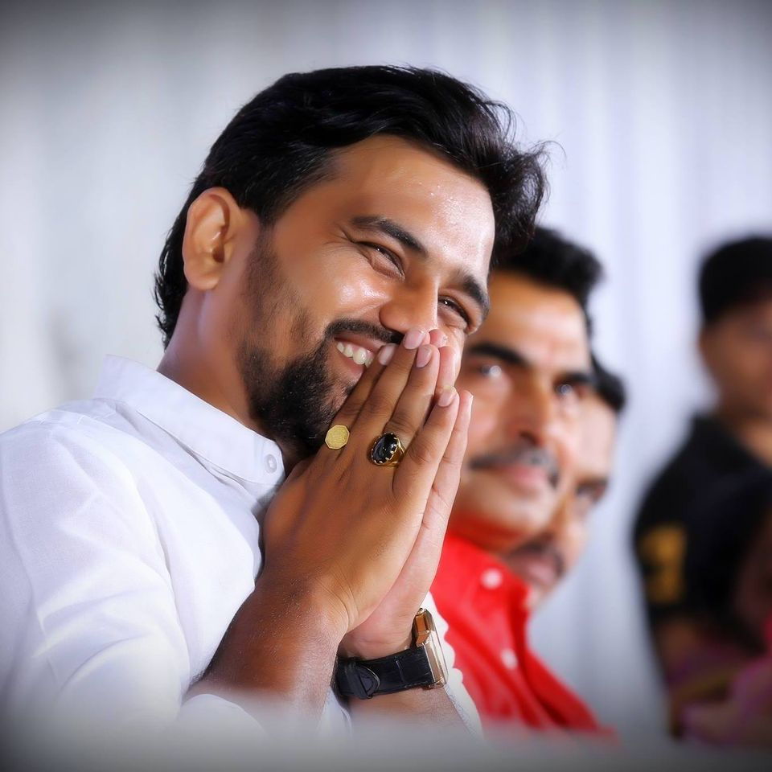

दैनंदिन कार्यक्रम:
दुपारी: १२ ते ३ संगितमय श्रीमद भागवत कथा
सायं : ५ ते ६ हरिपाठ
सायं :७ वा. आरती
सायं : ८ ते ९ हरिकिर्तन/ सास्कृतीक कार्यक्रम होईल.
ह.भ.प.रुपालीताई सवणे
(परतुर)
किर्तन सौजन्य
(देविदास त्रिणबक डफळ,नारायण गणपत डफळ,एकनाथ रामदास डफळ,दादाराव द्वारकुबा डफळ)
फराळाचे अन्नदाते
रमेश पुंडलिक खोमणे
सायंकाळचे अन्नदाते
शिवाजी तुकाराम मोरे
गजानन रामा हाडोळे
अनिल मिठ्ठू कौशल्येश्री.ह.भ.प. ज्ञानेश्वर महाराज पठाडे
(कर्जत)
किर्तन सौजन्य
(राणी साईबाई बचत गट मांडणा)
फराळाचे अन्नदाते
गणेश लक्ष्मण डफळ
सायंकाळचे अन्नदाते
गजानन सांडू लोखंडे
मोहन नाना लोखंडे
अजिनाथ धोंडीबा लोखंडेश्री. भास्कर घेरे पाटील
(सरपंच पाटोदा)
कार्यक्रम सौजन्य
(ग्रामपंचायत कार्यालय मांडणा)
फराळाचे अन्नदाते
प्रदिप हरी लोखंडे
कृष्णा सुखदेव लोखंडे,
सायंकाळचे अन्नदाते
त्र्यंबक राघो लोखंडे
जनर्धन राघो लोखंडे
रामदास राघो लोखंडे
सुधाकर राघो लोखंडेश्री. अशुतोष झा
(बिहार)
कार्यक्रम सौजन्य
(नवतरुण मित्र मंडल मांडणा)
फराळाचे अन्नदाते
विनोद संजय लोखंडे
सायंकाळचे अन्नदाते
रामेश्वर देवराव डफळश्री.प्रा.यशवंत गोसावी
(नाशिक)
कार्यक्रम सौजन्य
(प्रभाकर लक्ष्मण सिरसाठ, प्रेमराज त्रिंबक डफळ, कैतिक दादा लोखंडे)

फराळाचे अन्नदाते
कडूबा नामदेव शिरसाठ
सायंकाळचे अन्नदाते
अवळीचा मळाश्री.ह.भ.प.समाधान महाराज भोजेकर
(जळगाव)
किर्तन सौजन्य
(संतोष हरिबा लोखंडे, उत्तम विठ्ठल लोखंडे, भागाजी तेजराव डफळ)
फराळाचे अन्नदाते
सुनिल आत्माराम हिवाळे
सायंकाळचे अन्नदाते
संतोष हरिबा डफळ
उत्तम विठ्ठल लोखंडे
भागाजी तेजराव डफळश्री.ह.भ.प. शिरीषजी महाराज डोंगरे
(मिरज)
किर्तन सौजन्य
(अंबादास तुळशीराम घायवठ, नाना फकिरा लोखंडे, विष्णू नामदेव लोखंडे)
फराळाचे अन्नदाते
नामदेव नीलुबा लोखंडे
सायंकाळचे अन्नदाते
पंढरी दादा हिवाळे
संजय गोविंदा खाकरे
विष्णू नामदेव लोखंडे
नाना फकिरा लोखंडे
्रश्री. ह. भ. प. समाधान महाराज शर्मा
(केज)
किर्तन सौजन्य
(समाधान शेषराव लोखंडे, अंबादास तुकाराम लोखंडे)
फराळाचे अन्नदाते
पांडुरंग नामदेव लोखंडे
सायंकाळचे अन्नदाते
गंजीधर रानुबा लोखंडे
एकनाथ सांडू हिवाळे
डॉ.लोखंडे
डॉ.गोलेचाश्री.ह.भ.प. रामराव महाराज ढोक
(नागपुर)
किर्तन सौजन्य
(दिलीप भिका दौड, गणपत भिका दौड, योगेश साळुबा मोरे, देविदास महादू दौड, रामदास महादू दौड)
फराळाचे अन्नदाते
भागवत भुजंगा लोखंडेतुकाराम इंगळे
सायंकाळचे अन्नदाते
राजू सुखदेव काकडे
संभाजी नारायण मोरे
सतीश आत्माराम लोखंडे
शामराव सुखदेव सुळ